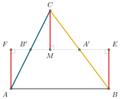
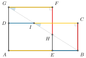

2023-12-12
定義（圖形）. 一個圖形是一個簡單多邊形，亦即：一個圖形沒有洞，並且其邊不與自己相交。
簡單來説，就是可以用一張紙剪出來且沒有洞的圖形。
定義（剪）. 剪指將一個圖形以一條直線分割成兩部分。
這個定義模仿的就是一把剪刀剪下去的概念。
定義（貼）. 貼指的是把兩個圖形不重疊地合併再一起。
任何一個圖形的面積在剪貼前後不會改變。
定理. 任何三角形可以剪貼成長方形。 證明. 給定 \(\triangle ABC\)，作 \(\overline{AB}\) 的垂線 \(\overline{CM}\)。連接線段 \(\overline{AC}\) 及 \(\overline{BC}\)。 
定理. 任何長方形可以剪接成正方形。 證明.  我們想將 \(\square{ABCD}\) 拼剪成正方形 \(\square{AEFG}\)。作法如下：